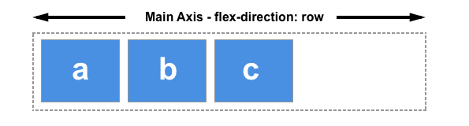
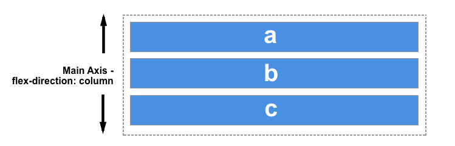

Flex Box
El Módulo de Caja Flexible, comúnmente llamado flexbox, fue diseñado como un modelo unidimensional de layout, y como un método que pueda ayudar a distribuir el espacio entre los ítems de una interfaz y mejorar las capacidades de alineación. (MDN contributors, 2021)
Cuando describimos a flexbox como unidimensional destacamos el hecho que flexbox maneja el layout en una sola dimensión a la vez — ya sea como fila o como columna. Esto contrasta con el modelo bidimensional del Grid Layout de CSS, el cual controla columnas y filas a la vez. (MDN contributors, 2021)
Los dos ejes de flexbox
Cuando trabajamos con flexbox necesitamos pensar en términos de dos ejes — el eje principal y el eje cruzado. El eje principal está definido por la propiedad flex-direction, y el eje cruzado es perpendicular a este. Todo lo que hacemos con flexbox está referido a estos dos ejes, por lo que vale la pena entender cómo trabajan desde el principio. (MDN contributors, 2021)
El eje principal
El eje principal está definido por flex-direction, que posee cuatro posibles valores:
- Row
- Row-reverse
- Column
- Column-reverse
Si elegimos row o row-reverse, el eje principal correrá a lo largo de la fila según la dirección de la línea . (MDN contributors, 2021)
Al elegir column o column-reverse el eje principal correrá desde el borde superior de la página hasta el final — según la dirección del bloque. (MDN contributors, 2021)
Bibliografía
MDN contributors. (10 de 03 de 2021). MDN Web Docs. Obtenido de MDN Web Docs: https://developer.mozilla.org/es/docs/Web/CSS/CSS_Flexible_Box_Layout/Basic_Concepts_of_Flexbox